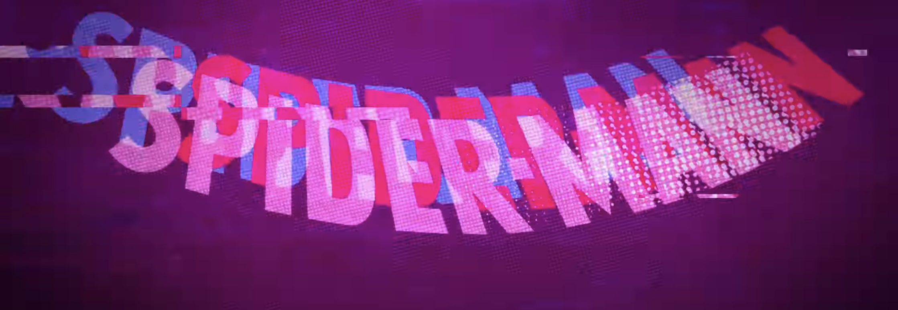

Spider-Man: Into the Spider-Verse won Best Animated Feature Film at the 76th Golden Globe Awards, and won the same award at the 24th Critics’ Choice Awards and the 91st Academy Awards, among several other awards and nominations. It was the first non-Disney or Pixar film to win the Oscar for Best Animated Feature since Rango (2011), becoming the 6th non-Disney/Pixar film to win the award.
Spider-Man: Into the Spider-Verse appeared on many critics’ top ten lists. According to Metacritic it appeared in first place on 5 lists. Critics at New York Magazine listed it at 9 on their list of the best films of the decade.
